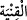
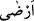

denilmiştir. Koyun vb. hayvanlar edinmeyi ifâde için (
) ifâdesi
kullanıldığı gibi “Bir malı ticaret için değil de kendisi için edinmek” mânâsında da (
) kalıbı kullanılmaktadır.
Tâcü’l-Mesâdir’de der ki: (
), sermâye vermek ve hoşnut etmek demektir. Bazı
âlimler de bu âyetin tefsîrini, “İnsanlara yeterli olduğu kadar malları veren, yeterli malı
verdikten sonra biriktirmiş oldukları kazançlarını da ihsân eden O’dur.” şeklinde
yapmışlardır.
Dahhâk da âyeti şu şekilde yorumlar: “Allah Teâlâ altın, gümüş, elbise ve ev vererek
insanı zengin eden; deve, sığır, koyun ve hayvan vererek memnun edendir” (
)
“kazanç” kelimesinin müfred olarak ve (
) fiilinden sonra zikredilmesi, Allah’ın
verdiği kazancın çok şerefli ve faziletli oluşuna işâret etmek içindir. (
) fiilinin
mânâsı, (
) yâni “razı kıldı” demektir. Bunun hakikati şudur: Allah, verdiği kazançla
rızâsını hoşnutluk ve zenginlik kıldı.
Sa’dî Müftî, bu âyetin en uygun tefsirinin, önceki âyetlerle bağlantılı olarak iki zıt
arasını cem edip “tıbâk” sanatının gözetilerek yapılmasıdır. (
) fiilindeki hemzenin
izâle anlamına gelmesiyle onun (
) “muhtaç kılan O’dur” mânâsına hamledilmesi
şeklinde olduğunu söyler.
Cüneyd (k.s.) der ki: “Kimi topluluğu kendisi vâsıtasıyla zengin kılan, kimini de
kendisinden fakir kılan O’dur.” Bazı âlimler de âyetin işârî tefsirini şöyle yapar: “Bu
âyette Allah dini üzere sâbit, selim ve müstakim olan kalbe yönelen ilâhî feyzin
akıtılmasına işâret edilmektedir. Nitekim bununla ilgili olarak Nebi (s.a.)’de: “Kalbimi
dinin üzere sabit kıl!” buyurmuştur. Bu feyz-i ilâhînin kalbin üzerine bırakılması ne o
kalpteki feyzi yok edebilecek ve ne de devamlı değişiklik arzu eden kalbin zıddına,
değişiklik arz etmez bir konumla kalbin istikrar bulması için nefs-i emmârenin zulmet
galebesi altında darmadağın olacaktır. Zira kalp bazı vakitler istikrara kavuşmadığı için
nefsin zulmetiyle bulanıklaşmaya ve üzerindeki bu ilâhî feyzin kendisinden
uzaklaşmasına maruz kalır. İşte bu tür mânâ da âyette (
) fiiliyle verilmek ve bununla
da “Kalpte bu ilâhî nuru kazanç olarak veren de O’dur” denilmek istenmiştir.
Ayrıca bu âyet sadece faydalı mallardan kazanç biriktirmenin mubah olduğuna da
delâlet etmektedir. Bu nedenle Nebi (s.a.) köpek edinmeyi nehyetmiştir. Yâni ekin,
hayvan ve benzerini beklemesi dışında faydasız şekilde köpek beslemeyi yasaklamıştır.
Nefs-i emmâre, arazîleri bekleyen köpekten daha güçlüdür. Uzak yerde olup da elde
edilemeyen gelişme dönemindeki rûhu sâhiplenmeye çalışmak da faydası olmayan
güdük ve kısır bir meşgaledir.
Görmez misin ki böyle kimseler nefis ve tabîat mertebesinden uzaklaşmaz. Ancak
kalbî neş’etlerinde insan-ı kâmilin yanına yaklaşamaz. Çünkü kalp hoş bir otlak ve nefis
ise bir bahçe gibidir. Orada yalnızca tayyib olan ruh ve pak olan beden hayvan otlatır.